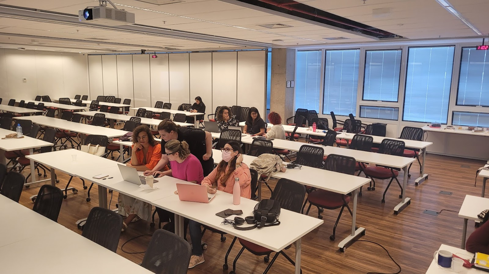
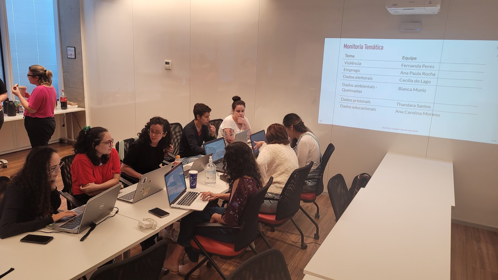
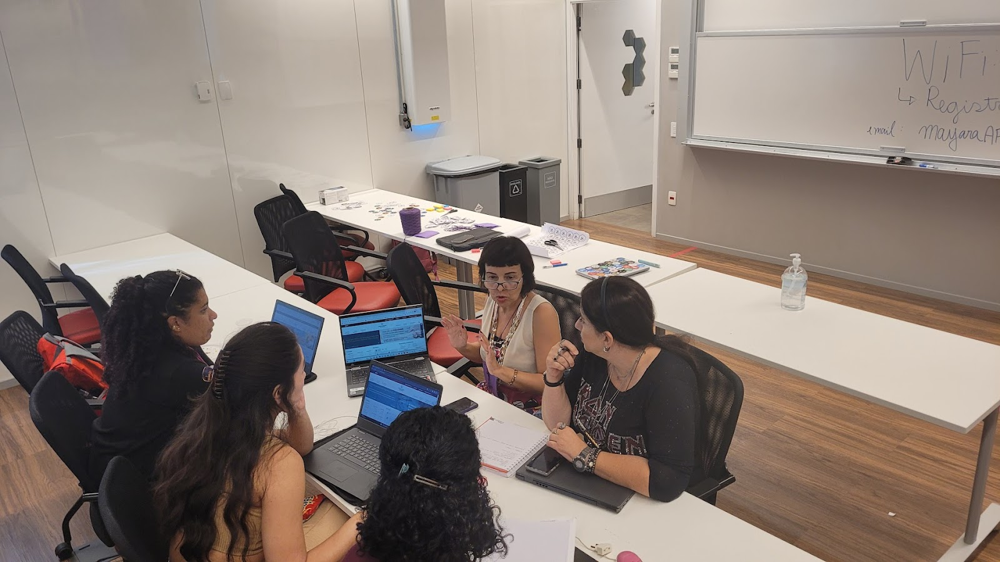

Introdução
A R-Ladies São Paulo organizou, em 18 de março de 2023, o evento “Análise de Dados Abertos com R - Open Data Day”. A atividade aconteceu em um sábado, durante os períodos da manhã e da tarde, totalizando 6 horas efetivas de atividade.
O Insper, uma instituição sem fins lucrativos dedicada ao ensino e à pesquisa, mais uma vez apoiou o grupo cedendo o espaço para a realização do evento. Outro apoio recebido foi da Curso-R, que cedeu dois monitores para auxiliar na monitoria, ajudando nas dúvidas. O principal objetivo deste encontro foi oferecer informações a respeito do que são e da importância dos dados abertos e promover oportunidade de pôr a “mão-na-massa” manipulando dados abertos, além de traçar o cenário atual de acesso a esses dados em vários níveis governamentais e áreas do conhecimento.
O que é o Open Data Day?
O Open Data Day, ou “Dia dos Dados Abertos”, é uma celebração anual dos dados abertos em todo o mundo, organizado e apoiado pela Open Knowledge Foundation. Caso queira saber mais, consulte o site oficial do Open Data Day e a página do projeto no site da Open Knowledge Brasil.
Atividade principal
Contando com cerca de 40 pessoas, o dia foi estruturado em quatro blocos. O primeiro bloco teve caráter informativo e contou com uma sequência de breves apresentações como: o que é a comunidade R-Ladies São Paulo, o que é Open Data Day e o que são Dados Abertos.
Como era objetivo que as pessoas se sentissem à vontade para mexer nas bases de dados abertos, experimentou-se o formato de dividir a turma em pequenos grupos de trabalho. Cada grupo trabalhou uma base específica e foi acompanhado de uma monitora com experiência na análise desses dados, que orientou o grupo a buscar os dados e entendê-los. Assim, o segundo bloco consistiu:
da explicação de como aconteceria essa dinâmica;
de uma fala breve (cerca de 5 minutos) de cada monitora sobre o tema de sua expertise e sobre a base de dados abertos que seria trabalhada, para facilitar a identificação das participantes com o tema;
e da separação das participantes nos grupos segundo afinidade de interesses - a adesão foi livre e não houve necessidade de redimensionar ou redistribuir os grupos.
Os temas e respectivas monitoras foram:
Além disso, havia pessoas monitoras disponíveis para ajudar em dúvidas sobre R:
Foi criado um Google Docs aberto para que os grupos pudessem fazer e compartilhar anotações.
|  |
 |
|  |
 |
Então, no terceiro bloco, os grupos trabalharam em importar, entender e começar a explorar os dados abertos de seus respectivos temas. Como muitas pessoas apontaram que não tinham experiência para criar visualizações de dados e tinham interesse em começar, a co-organizadora Beatriz Milz fez uma apresentação curta, em formato live coding, sobre o uso do pacote esquisse para gerar visualizações de dados com ggplot2.
No quarto e último bloco, os grupos apresentaram um pouco de suas dificuldades, aprendizados e resultados (alguns inclusive apresentaram visualizações feitas!). Foram apresentações interessantes que refletiram os tópicos abordados nas apresentações iniciais sobre dados abertos - por exemplo, alguns grupos indicaram lidar com base desatualizada, outros apontaram que dados estavam agregados e poderiam ser disponibilizados em forma de microdados, entre outros.
A experiência foi muito boa, e as pessoas organizadoras e participantes demonstraram ter gostado bastante da atividade (principalmente as crianças!). Cada grupo teve entre duas e seis pessoas além das monitorias, o que permitiu um acompanhamento mais individualizado para sanar dúvidas e garantir o aproveitamento da atividade.
Fortalecendo a comunidade
Dois pontos interessantes a destacar são o café colaborativo e o Espaço Gugudadados.
Café Colaborativo
O café colaborativo foi montado com itens comprados com o valor da bolsa oferecida pela OKBR, e também por itens trazidos por participantes. Assim, as pessoas puderam levantar e buscar café e algo para comer em qualquer momento do evento. Esse formato de café (disponível o tempo todo do evento) é muito bom por 3 motivos: (i) respeita o tempo dos grupos que podem fazer suas pausas conforme o andar dos trabalhos; (ii) acolhe participantes que por questões de saúde não podem permanecer muitas horas sem comer e (iii) acolhe participantes que por condição sócio-econômica não têm como fazer uma refeição no intervalo do almoço. Dada a natureza do grupo R-Ladies, é um quesito importante prover um acolhimento mínimo necessário para que todas as pessoas tenham condição de usufruir da experiência do evento independente de ter o que comer ao longo do dia, além de que o café colaborativo também é uma forma de incentivar a integração entre as pessoas!
Espaço Gugudadados
O Espaço Gugudadados é um espaço feito para facilitar a participação de mães e pessoas cuidadoras. Participaram um bebê e quatro crianças na faixa de 7 a 10 anos. Com o valor da bolsa oferecida pela OKBR foi possível contratar uma professora recreadora que esteve no espaço Gugudadados (uma sala ao lado da sala das atividades dos adultos, no mesmo andar) durante toda a atividade. As organizadoras da R-Ladies também levaram brinquedos, desenhos, canetinhas, jogos e tatuagens temporárias para entreter e divertir as crianças.
Resultados dos grupos
Grupo de dados eleitorais (Monitora Cecília do Lago):
Este grupo explorou dados eleitorais referentes às eleições de 2022, disponibilizados pelo TSE. Uma curiosidade do grupo era descobrir quantos candidatos não receberam um ou nenhum voto na eleição de 2022.
Os dados utilizados podem ser obtidos no Portal de Dados Abertos do TSE.
Grupo de dados ambientais (Bianca Muniz):
Este grupo explorou dados sobre focos de queimadas, no sistema BDQueimadas do INPE. Esse sistema permite fazer downloads de dados num período de até um ano. A monitora preparou uma apresentação sobre os dados utilizados. O grupo exportou os dados referentes à 2020 até 2022, e o gráfico a seguir permite ver a quantidade de focos de queimada por mês, segundo o bioma onde o foco de queimada acontece. É possível perceber no gráfico que os biomas com maiores focos de incêndio são a Amazônia e o Cerrado, e apresentam padrões sazonais. O maior pico de focos de queimadas na Amazônia no período pesquisado aconteceu no segundo semestre de 2022.
Os dados utilizados podem ser obtidos no site do INPE - BD QUEIMADAS.
Grupo de dados prisionais (Monitora Thandara Santos):
Este grupo explorou dados do SISDEPEN - Dados Estatísticos do Sistema Penitenciário Brasileiro. Esses dados são provenientes do Formulário de Informações Prisionais, respondido de forma eletrônica semestralmente, por servidores indicados pelas Secretarias de administrações prisionais dos Estados e Distrito Federal e do Sistema Penitenciário Federal.
Uma das dificuldades apresentadas pelo grupo é a disponibilização dos dados serem agregadas por unidade prisional, e não indivíduos, o que inviabiliza diversas análises importantes sobre a população carcerária do Brasil. Outra dificuldade apresentada é a falta de padronização às respostas apresentadas na base, o que implica em uma baixa confiabilidade dos dados.
Os dados utilizados podem ser obtidos no site da Secretaria Nacional de Políticas Penais.
Grupo de dados de violência (Monitora Fernanda Peres):
Este grupo explorou dados públicos sobre violência usando os dados do SINAN - Sistema de Informações de Agravo de Notificações, filtrando ocorrências envolvendo apenas adultos e removendo cacos de violência auto-provocada (por exemplo, suicídio). O grupo constatou que os dados públicos de Violência no DataSUS estavam desatualizados. A base referente à 2020 estava incompleta, portanto o grupo explorou dados referentes a 2019. O grupo gerou uma série de gráficos, como o apresentado a seguir, que mostra que a maior quantidade de vítimas é do sexo feminino. Além disso, destaca-se que o autor da agressão na maioria das vezes é do sexo masculino (seja a vítima mulher ou homem).
Outra ponto percebido é que quando as vítimas são mulheres, o agressor tende a ser alguém conhecido, como cônjuge, ex-cônjuge, namorado ou ex-namorado. Entre os homens, o agressor mais comum é um desconhecido.
Os dados podem ser obtidos no DATASUS. A monitora fez uma apresentação sobre como obter esses dados.
Grupo de dados de emprego (Monitora Ana Paula):
A monitora fez uma apresentação sobre como obter esses dados. O grupo explorou duas bases de dados provenientes do Caged (Cadastro Geral de Empregados e Desempregados) a partir do Banco Central, sendo elas: número de empregos totais de 2000 a 2023; e número de empregos pela indústria de transformação (qualquer matéria prima que é transformada) de 2000 a 2023. Os dados podem ser obtidos com o pacote GetBCBData, sendo possível buscar dados atualizados, porém agregados por mês/ano e ID da série temporal.
Rows: 37
Columns: 3
$ ref.date <date> 2020-01-01, 2020-02-01, 2020-03-01, 2020-04-01, 2020…
$ NCaged <dbl> 37938640, 38155900, 37860843, 36879150, 36480704, 364…
$ NCaged_IndTransf <dbl> 6924768, 6961283, 6918309, 6705220, 6600422, 6593132,…
Para saber mais sobre essa base de dados, consulte também a página do Sistema Gerenciador de Séries Temporais do Banco Central do Brasil.
Perfil das pessoas participantes
Para buscar ampliar a diversidade na participação do evento, nesta edição reservamos as vagas pensando em três grupos:
- pessoas negras, pardas e indígenas;
- mães;
- mulheres e outras minorias de gênero.
Neste evento, 54 pessoas se inscreveram, e dessas, 37 participaram. A seguir, apresentamos alguns gráficos que mostram informações sobre questões de diversidade coletadas das pessoas participantes.
Ainda há muito trabalho a fazer para incluir grupos menos representados nos eventos, mas acreditamos que, em comparação aos eventos anteriores à pandemia, estamos avançando. Para os próximos eventos, é importante ampliar a divulgação dos eventos para os grupos de pessoas pretas, pardas e indígenas; para mães, e para pessoas trans e não binárias, além de estarmos em busca de parcerias para realizar esse tipo de atividade na periferia.
Dificuldades
A principal dificuldade na organização do evento foi o pouco tempo disponível para divulgação da atividade, já a definição da data e local foram feitas com apenas seis dias de antecedência. Apesar de a sala disponível ter capacidade para 100 pessoas, apenas 40 tiveram tempo hábil para se organizar e se inscrever como participantes.
No entanto, a presença final de mais de 40 pessoas, incluindo as pessoas das monitorias e organização, foi o suficiente para realizar a atividade, tendo a presença de pessoas muito interessadas!
Relatos
Além do relato oferecido pela equipe da organização, gostaríamos de compartilhar também dois relatos compartilhados por pessoas que participaram do evento:
Tatiana Peixoto:
Olá, eu sou a Tatiana, uma mulher de 42 anos, cis, negra, engenheira ambiental e apaixonada por estudar. Eu me inscrevi no evento, não só pela capacitação, mas também pela busca de otimismo e assim criar forças para me inserir novamente no mercado profissional, pois fiquei muito tempo no meio acadêmico. No dia 18.03.23, compreendi que a R-ladies é muito mais que um evento introdutório de programação. Essa equipe traz um novo olhar sobre a programação, tirando os bloqueios e os obstáculos para todes aqueles que querem seguir uma bela trajetória na ciência de dados. O evento é de ótima qualidade. Eu me senti acolhida, cuidada e muito bem tratada. Eu com certeza participaria de outros eventos da R-ladies. Além de toda a gentileza da equipe do Insper em nos receber. Espero que a R-ladies SP, siga com novos eventos e novos projetos, pois assim como eu, vocês farão muitas pessoas felizes.
Juliana Soprani:
Aproveito para reforçar minhas parabenizações pelo evento! Foi realmente muito relevante!!! Não só tecnicamente, no aprendizado de análise de dados e do uso do R, mas também sobre a questão do acolhimento, desencadeando uma sensação de pertencimento a um grupo ou propósito. Para quem está iniciando na área de dados, ou em transição de carreira, como no meu caso, foi muito importante ver tantas mulheres de diferentes áreas, idades e cenários trabalhando com dados e R e engajadas em ampliar o acesso à ferramenta para as minorias. Agradeço a oportunidade e espero futuramente poder contribuir com análise de dados em saúde. Ansiosa pelos próximos encontros.
Apoios
É importante ressaltar a importância do apoio financeiro da OKBR, que possibilitou a compra de itens para o coffee break, adesivos e também a contratação de uma recreadora.
As salas oferecidas pelo Insper foram cruciais para a realização do evento. O prédio é de fácil acesso por transporte público. O encontro aconteceu em um espaço amplo, que conta com acesso à internet, mesas, cadeiras confortáveis e facilidade de acesso a restaurante para o almoço. O tobogã que faz parte das instalações do prédio também é um sucesso e compõe uma das experiências mais alegres para as crianças que ficaram no Gugudadados.
A Curso-R também apoiou o evento, cedendo dois monitores para auxiliar na monitoria, ficando à disposição para ajudar nas dúvidas das pessoas participantes.
Equipe
Este evento não teria sido possível se não fosse a colaboração de várias pessoas. Portanto, aqui listamos pessoas que participaram das diversas etapas de organização do evento:
O evento não seria o mesmo sem a colaboração de vocês - agradecemos e valorizamos muito a sua participação!
Além disso, agradecemos também todas as pessoas que participaram!
Próximos eventos
Essa foi a primeira vez que realizamos evento com a ideia de trabalhar em “grupos”, e com certeza é um formato que funcionou (as participantes apontaram que preferiam assim do que palestras expositivas). Pretendemos organizar outros eventos nesse formato!
O próximo evento da R-Ladies São Paulo está previsto para acontecer em maio, com tema ainda a ser definido. Caso tenha interesse em participar, recomendamos acompanhar nossas redes sociais!
Até o próximo encontro!


{kind=link}
{kind=link}
{kind=link}
{kind=link}

{kind=link}
{kind=link}
{kind=link}
{kind=link}
{kind=link}